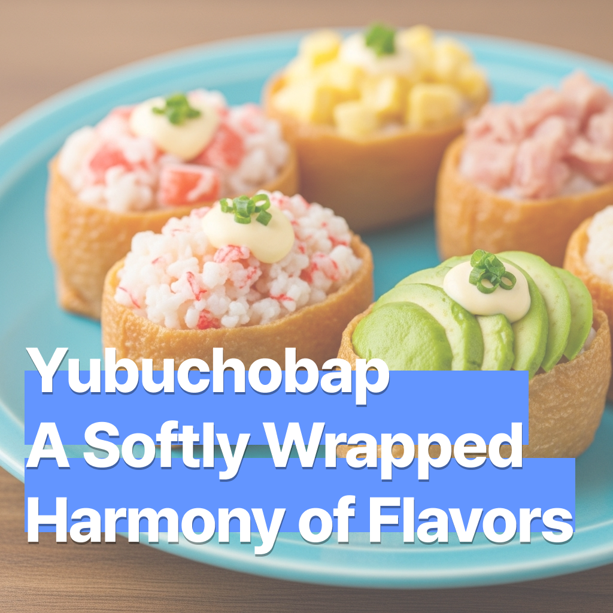

유부초밥 - 부드럽게 감싼 조화로운 맛
2025-07-16

유부초밥 - 부드럽게 감싼 조화로운 맛
정말 다양한 국가의 도시락에 이 메뉴가 포함됩니다. 입맛에 따라 재료를 바꾸고, 밥의 간을 조절합니다. 유부초밥은 모두에게 사랑받기 위해 노력하는 요리입니다. 그 작은 유부 속에 담긴 정성과 조화는, 한 끼 식사 그 이상의 따뜻함을 전해주죠.
🛒 재료 (2~3인분)
- 밥 2공기 (약 330g)
- 유부피 약 10장 (시판 유부초밥용)
- 다진 당근 2큰술
- 쪽파 또는 오이 2큰술
- 통깨 1큰술
- 식초소스 재료: 식초 2큰술, 설탕 1큰술, 소금 ½작은술
- 토핑 (선택): 크래미 마요 / 참치 마요 / 아보카도 슬라이스 등
🔪 재료 손질
밥: 식초소스를 넣고 자르듯 섞은 뒤 식혀줍니다. 밥알이 뭉개지지 않게 주의하며 고슬고슬한 상태로 유지해주세요.
유부피: 시판 제품의 국물을 살살 짜낸 후 준비합니다. 너무 세게 짜면 찢어지기 쉬우므로 조심스럽게 다루세요.
당근: 껍질을 벗겨 곱게 다진 뒤 기름 없이 살짝 볶아 숨만 죽여줍니다.
오이 또는 쪽파: 오이는 씨를 제거하고 다지고, 쪽파는 송송 썰어 준비합니다.
토핑: 크래미는 찢어서 마요와 와사비를 섞고, 참치는 물기를 제거해 마요와 버무립니다. 아보카도는 껍질을 벗겨 슬라이스합니다.
🥣 초밥소스 만들기
재료
- 식초 2큰술
- 설탕 1큰술
- 소금 ½작은술
방법
작은 그릇에 재료를 모두 넣고 고루 저어 녹여줍니다. 밥이 따뜻할 때 섞으면 풍미가 잘 배어 새콤달콤한 초밥밥을 만들 수 있어요. 너무 뜨거우면 향이 날아가고, 너무 식으면 간이 배지 않으니 약간 식힌 상태에서 사용하는 것이 좋아요.
👩🍳 만드는 법
- 식초소스로 간을 맞춘 밥에 다진 당근, 오이 또는 쪽파, 통깨를 넣고 부드럽게 섞습니다.
- 유부피를 조심스럽게 벌려 밥을 채워 넣고 손가락으로 눌러 모양을 다듬습니다.
- 크래미 마요, 참치 마요, 아보카도 등의 토핑을 올려 풍미와 색감을 더합니다.
- 접시에 정갈하게 담으면 부드럽고 조화로운 유부초밥이 완성됩니다!
💡 팁
유부초밥은 속재료에 따라 자유롭게 변주할 수 있어요. 아래는 인기 있는 응용 예시입니다:
- 연어 & 아보카도: 훈제 연어나 생연어, 아보카도를 얹어 한층 고급스러운 풍미로
- 김치 볶음: 매콤하게 볶은 김치로 한식 특유의 감칠맛과 식감을 더해요
- 계란지단 & 우엉조림: 달걀지단과 달콤한 우엉조림으로 일본 도시락 분위기를 연출
- 달걀샐러드: 삶은 달걀과 마요네즈를 섞어 부드럽고 촉촉한 속재료로 활용
- 불닭 토핑: 매운 양념 치킨을 잘게 다져 올리면 자극적인 맛의 한입 요리로
- 견과류 & 크랜베리: 호두, 아몬드, 크랜베리 등으로 고소하고 달콤한 샐러드풍 유부초밥 완성
오늘은 어떤 취향을 담아볼까요?